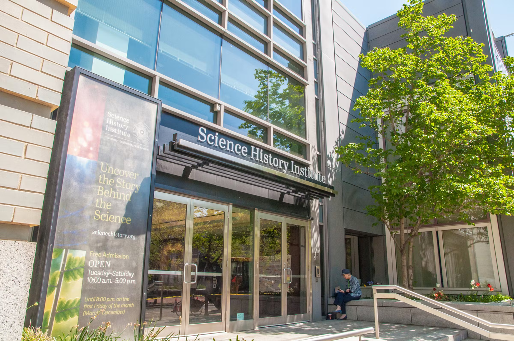

Science History Institute
The Science History Institute's Museum unveiled their newest exhibit, "Downstream," on September 14, 2021. "Downstream" is an analysis on the past 200 years of water history in the United States. The primary audience ranged from college students to science professionals and academics.
I was tasked with securing media hits and increase engagement in Philadelphia for both the exhibit and institute as a whole.
The exhibit unveiling came in two parts; the first being a media-only event which allowed local reporters to come and see the exhibit before the public, providing free range for photos, video and interviews with key personalities involved in the exhibit, and the second part being opening night.
Two press releases and two media advisories were sent out. The releases positioned Downstream as a fun, meaningful and educational exhibit focused on appreciating and understanding water, something which impacts everyone's lives at the most fundamental level while also connecting it back within the City of Philadelphia.
The campaign resulted in 11 media mentions in publications such as The Philadelphia Inquirer, WHYY and VisitPhilly, leading up to a sold-out opening night crowd of 150 visitors, which capped as a result of COVID-19 restrictions.
